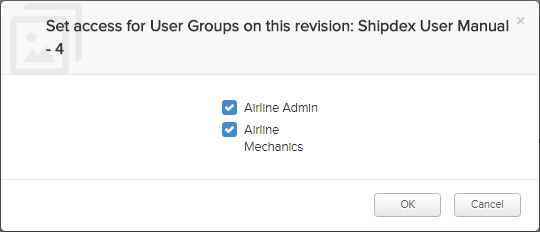

Not applicable for Pinpoint Standalone Light.
If you have permissions for the Can set privileges on revisions privilege in Access
Control, you will see a
 Manage Current Revision
icon in the
action bar when viewing a released publication.
Manage Current Revision
icon in the
action bar when viewing a released publication.
When clicking on the
 Manage
Current Revision
icon, a dialog appears where you can choose which user groups will get
access to the publication:
Manage
Current Revision
icon, a dialog appears where you can choose which user groups will get
access to the publication:

You decide which groups will be able to access the publication by setting a check mark and
clicking the OK button. Next, you must click OK in
a confirmation dialog.
Note: Only the user groups in your organization are available to
select and allow access to the publication.
- Users belonging to the selected user groups will then get access to the publication (Read/Write/Delete permission).
- Users belonging to user groups that are not selected, will have their permissions for the publication removed.
- If no user group is selected when clicking OK, the access to the revision is removed for all user groups.
Important: The user setting access for other user groups in this dialog must
also belong to the groups that shall be granted access, if not, the groups will not show
up in the dialog.
This way of assigning access for other users would typically be useful in a scenario with several organizations or departments involved, for example:
| OEM Side | Airline Side | |
|---|---|---|
| User Group: OEM Admin | User Group: Airline Admin | User Group: Airline Mechanics |
| Task: The OEM Admin releases a publication to the Airline Admin group using the release functionality in Pinpoint. | Task: The Airline Admin get access to the publication from the OEM Admin. Next,
this role uses the
|
Task: Gets access to view the publication from the Airline Admin. |